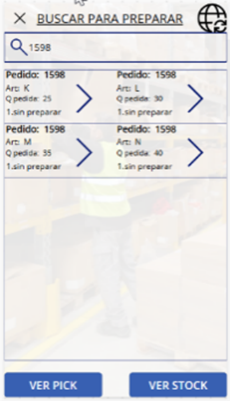
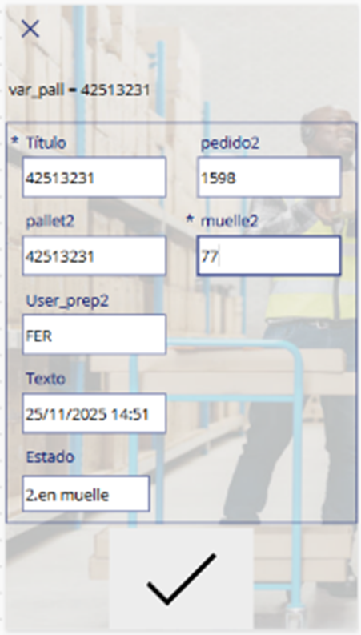
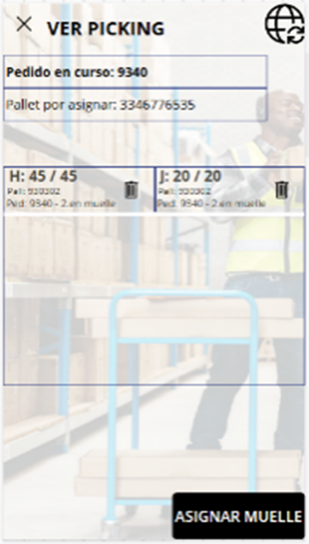
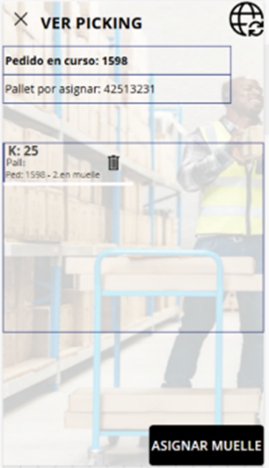
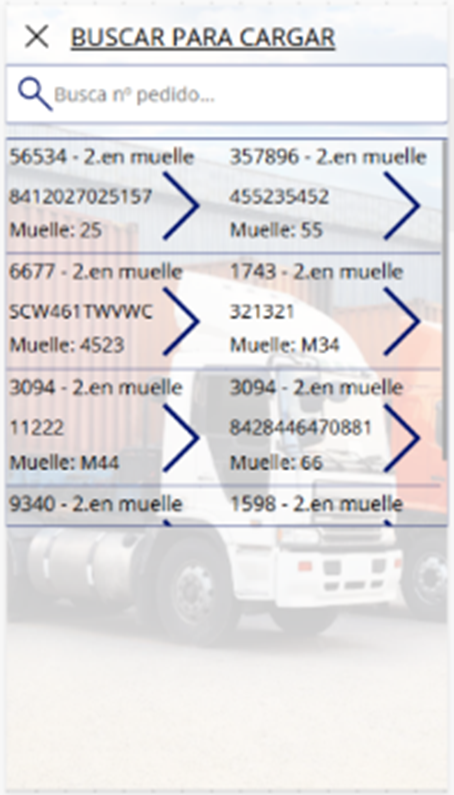
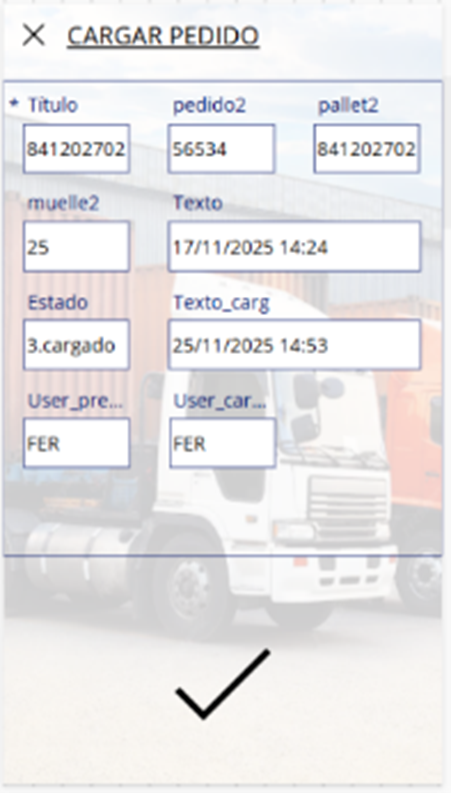

SGA (Power Apps)
Solución digital para la gestión de almacén lista para operar. Control en tiempo real de recepciones, ubicaciones, pedidos, cargas y devoluciones — todo desde una app móvil con escaneo de códigos QR.
Explorar la interfaz
Funcionalidades Clave

Picking guiado por artículo
El operario selecciona el pedido, escanea el pallet y recibe la lista de artículos con sus ubicaciones. Cada línea se confirma individualmente hasta completar el pallet.
- Asignación de pallet al inicio del proceso
- Lista de artículos con ubicación y cantidad a preparar
- VER PICK para revisar y deshacer líneas ya preparadas
- Asignación de muelle al completar el pallet
Recepción de mercancía
El operario introduce el artículo y la cantidad recibida. El material queda registrado automáticamente en la posición muelle_IN a la espera de ser ubicado en estantería.
- Registro inmediato con artículo y cantidad
- Depósito automático en muelle_IN
- Albarán de proveedor vinculado al registro
- Estado: Muelle_IN / Parcial / Ubicado

De muelle a estantería
Traslada el material descargado en muelle_IN a su código de ubicación definitivo en estantería. Solo accesible tras cerrar la tarea de Descarga.
- Código de ubicación destino escaneado con QR
- Registro positivo (código 201) en la tabla REGISTRO
- Flujo separado de la tarea de Descarga
- Actualización del estado de recepción a "Ubicado"


Traslado entre ubicaciones
Mueve material de una ubicación a otra dentro del almacén. Genera dos movimientos simultáneos: salida del origen y entrada en destino.
- Código origen escaneado para validar existencias
- Movimiento de salida código 302 (negativo)
- Movimiento de entrada código 301 (positivo)
- Trazabilidad completa del traslado

Expedición de pallets
Lista los pallets en estado "2.en muelle" listos para cargar. El operario selecciona el pallet, asigna el muelle de salida y registra el albarán de carga.
- Vista de todos los pallets listos para cargar
- Asignación de muelle de carga
- Estado final del pallet: "3.cargado"
- Registro de albarán de carga y usuario responsable

Gestión de devoluciones
Registra la devolución de material de cliente, ubicándolo en la posición habitual del artículo. Genera un movimiento de entrada positivo con trazabilidad completa.
- Registro positivo código 601 en ubicación de devolución
- Vinculación a la ubicación estándar del artículo
- Trazabilidad de usuario y fecha de devolución
Flujo de material con producción
Gestiona el envío de material a la línea de producción y la recuperación del sobrante. Dos botones independientes para movimientos de sentido contrario.
- REPONER PROD — salida hacia producción (código 502)
- RETORNAR DE PROD — entrada desde producción (código 501)
- Registro completo de usuario, fecha y cantidad
Corrección de existencias
Permite corregir el inventario en cualquier momento del flujo de trabajo. Disponible desde cualquier pantalla con distinción entre ajuste positivo y negativo.
- Ajuste positivo (código 701) — suma unidades
- Ajuste negativo (código 702) — resta unidades
- Accesible en cualquier punto del flujo de trabajo
Reporting ejecutivo en tiempo real
Panel de control conectado directamente a las tablas del SGA. Seis pestañas independientes para Indicadores, Inventario, Mapa de almacén, Pallets, Pedidos y Movimientos.
- Indicadores: minutos por tarea y productividad en min/movimiento
- Inventario actual por artículo y ubicación
- Mapa del almacén: Pareto de artículos y ubicaciones más activos
- Histórico de movimientos filtrable por artículo, ubicación y tarea